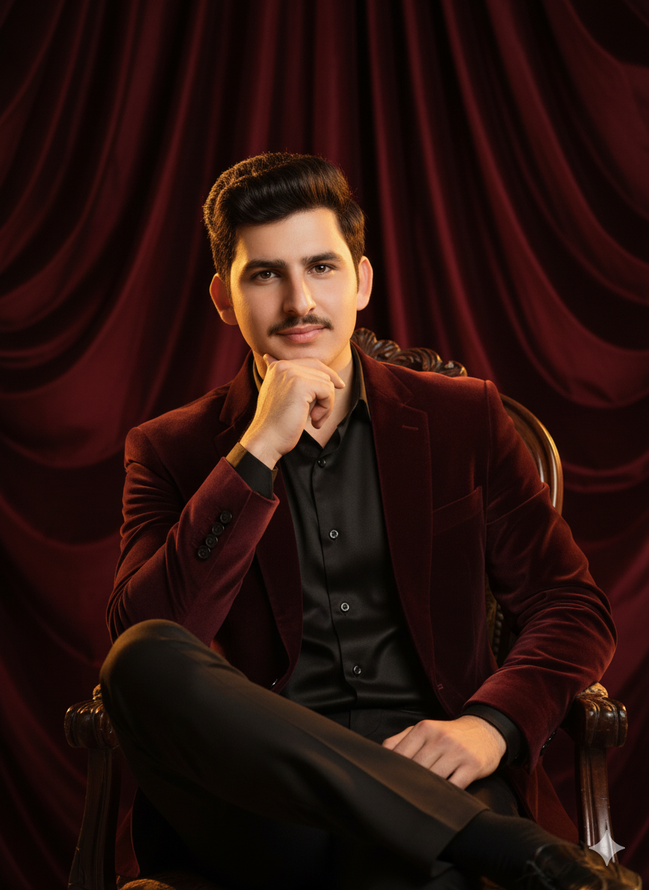
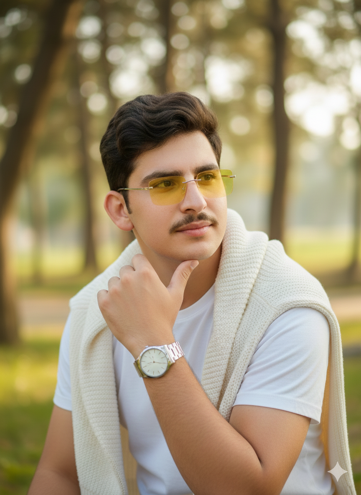

Complimentary shipping across Pakistan on orders over Rs 8,000 — the Eid Edit is live
MA Studio began in a single room off Gulberg's Main Boulevard with two sewing machines and a disagreement: should a modern Pakistani label choose between heritage and the West? We decided it never had to. Every collection since has been built on that refusal.
Today our karigars hand-finish bridal wear on the same floor where our pattern-cutters draft western tailoring — two crafts, one standard.
Discover the Collections
Three commitments that shape every piece before it ever reaches a rack.
Hand embroidery and gota work are never rushed. A bridal piece can take our karigars up to three weeks — we've never shortened that for a deadline.
Every silhouette is graded across an extended size range and tested on real customers before it's approved for production.
Our tailors and karigars are salaried, not paid per piece — because rushed hands make rushed seams.
MA Studio opens as a made-to-order lawn atelier serving Lahore brides-to-be by appointment only.
A capsule of tailored western pieces debuts alongside our bridal line — the first step toward one house, two wardrobes.
MA Studio ships across Pakistan for the first time, followed by international orders within the year.
This site — our first full digital atelier, built to hold both collections with equal care.

Oversees embroidery design and karigar training, with a focus on reviving regional techniques for a contemporary bride.

Trained in tailoring, leads pattern development for the Western line with an emphasis on fit and everyday wearability.